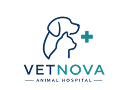
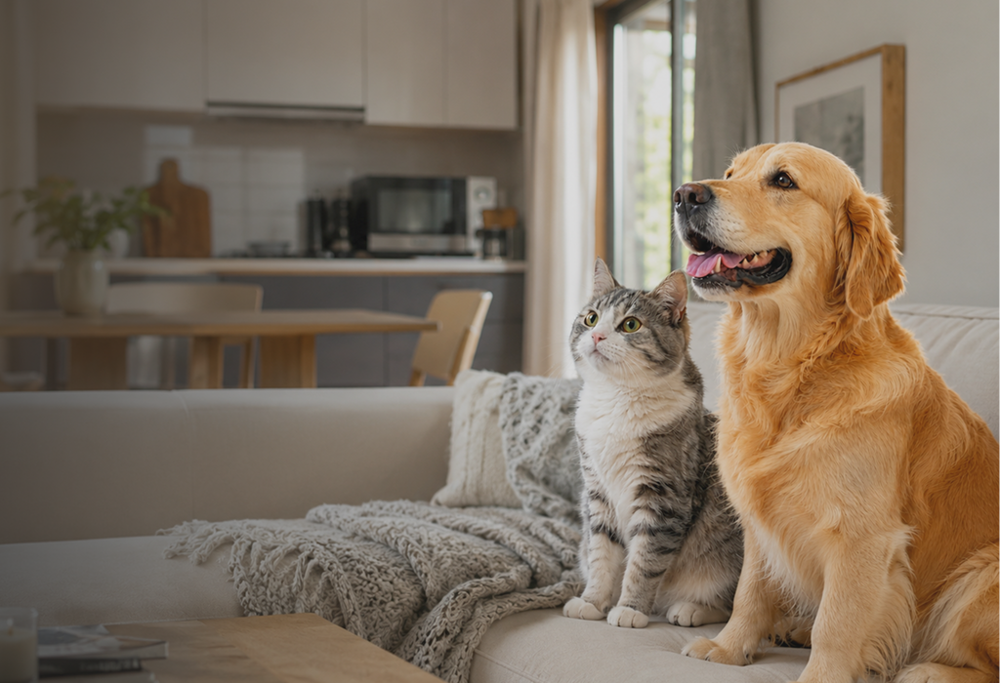
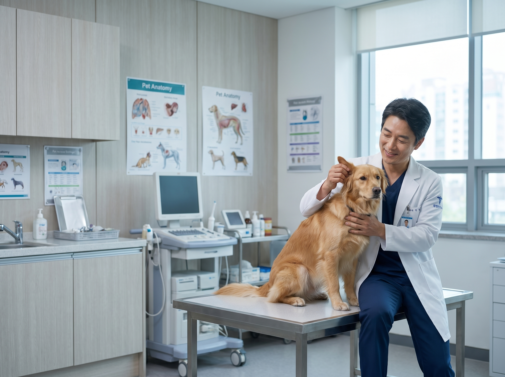
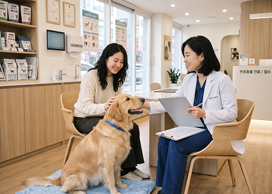
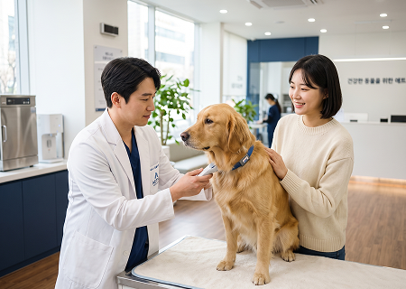
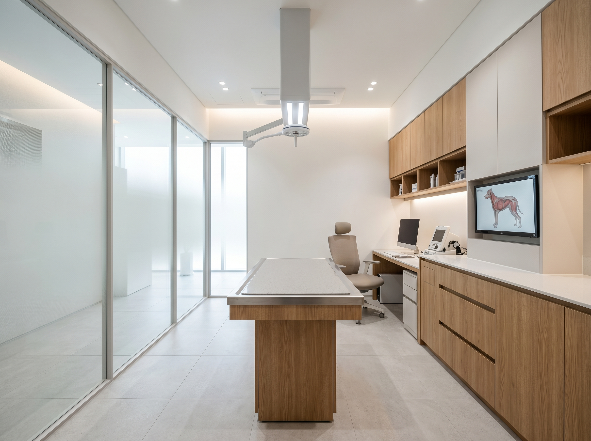
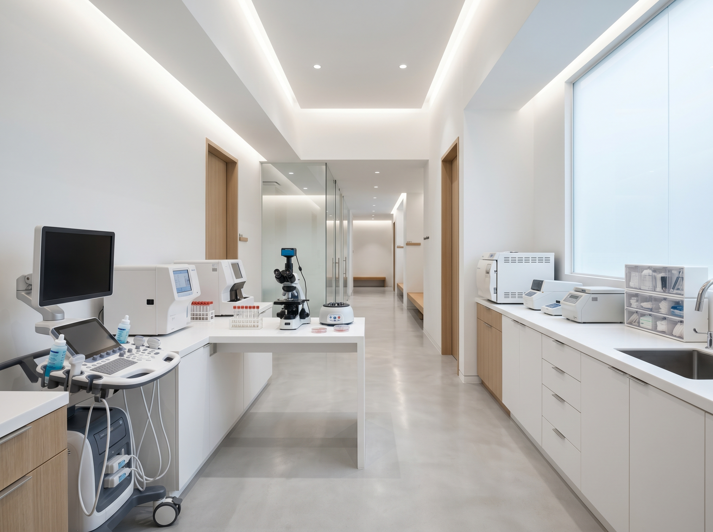
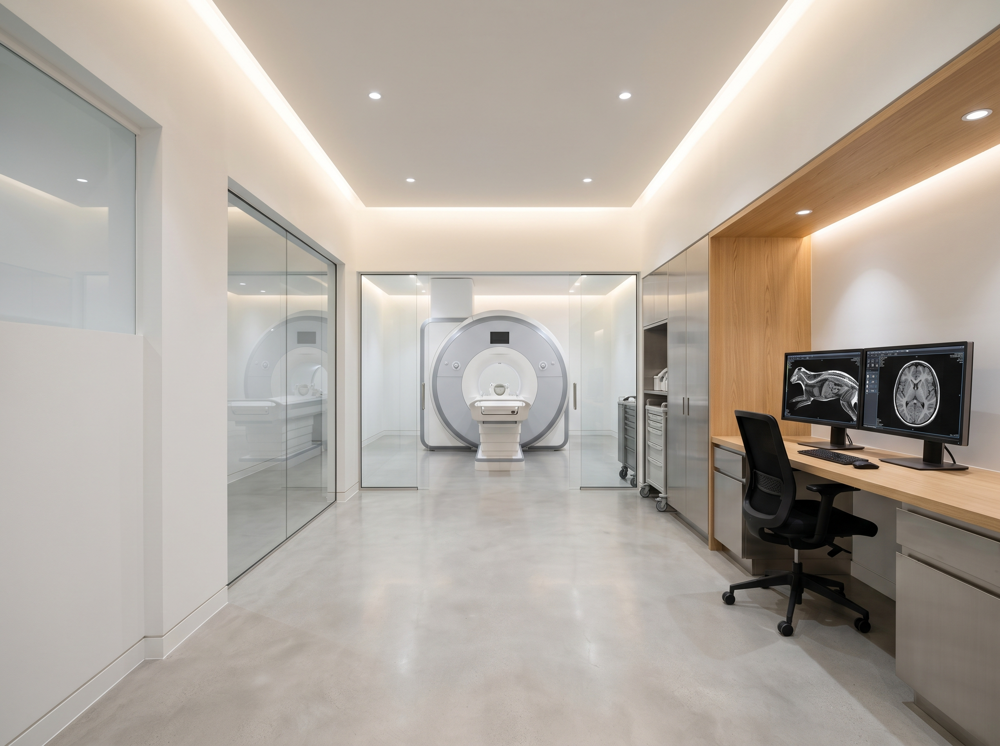
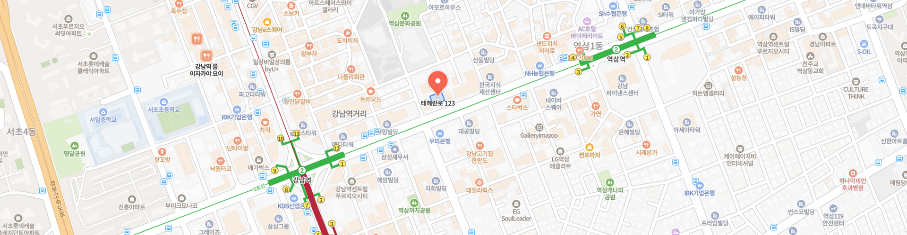
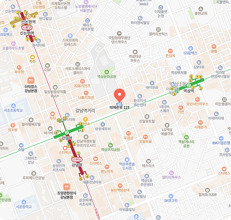

반려동물의 건강 이상 신호,
AI가 먼저 발견합니다.
바이오칩과 AI 분석 기술을 활용하여
반려동물의 건강 변화를 지속적으로 확인하고
보다 정확한 진료와 맞춤형 처방을 지원합니다.


바이오칩과 AI 분석 기술을 활용하여
반려동물의 건강 변화를 지속적으로 확인하고
보다 정확한 진료와 맞춤형 처방을 지원합니다.
작은 변화를 놓치지 않는 것이
더 나은 의료의 시작이라고 믿습니다.
AI 기술과 전문 의료진의 경험을 결합하여 더 정확한 진단과 더 나은 치료를 제공합니다.
우리는 단순히 질병을 치료하는 것을 넘어, 반려동물의 건강한 삶을 오래도록 함께하는 의료 파트너가 되고자 합니다.
건강 데이터를 분석하여
더 정확한 진료를 지원합니다.
AI 바이오칩이 일상의 건강 변화를 분석하고
이상 신호를 조기에 감지합니다.
지속적인 건강 분석으로
만성질환을 체계적으로 관리합니다.
AI 모니터링으로
건강을 지속적으로 관리합니다.
작은 변화는 지나칠 수 있지만, VETNOVA는 그 신호를 놓치지 않습니다.
조기 발견부터 맞춤형 관리까지 이어지는 케어 과정을 확인해 보세요.
보호자의 마음까지 이해하는 진료를 위해
반려동물의 작은 신호 하나까지 세심하게 살피고 있습니다.
예방의학, AI 헬스케어, 내과 진료, 만성질환 관리
학력
경력

AI가 수집한 건강 데이터와 의료진의 전문성을 결합하여
더 체계적이고 효율적인 진료 프로세스를 제공합니다.

보호자의 상담 내용을 바탕으로
진료 방향을 설정합니다

생체 데이터를 수집하여
건강 상태를 확인합니다
AI가 데이터를 분석하여
건강 변화 신호를 확인합니다
AI 분석 결과와 임상 경험을
바탕으로 진단을 진행합니다
반려동물의 상태에 맞는
치료 및 관리 계획을 제공합니다
AI가 수집한 건강 데이터와 의료진의 전문성을 결합하여
더 체계적이고 효율적인 진료 프로세스를 제공합니다.

진료실
정밀 검사실
첨단 영상 진단실
AI 헬스케어 서비스와 진료 과정에 대해 자주 묻는 질문을 모았습니다.
VETNOVA의 진료와 건강 관리에 대한 궁금증을 쉽고 빠르게 확인해 보세요.
Q1. AI가 직접 진단하고 처방하나요?
VETNOVA의 AI 헬스케어 시스템은 반려동물의 건강 데이터를 분석하 여 “진료를 지원”하는 역할을 수행합니다.
최종 진단과 처방은 전문 의료진이 임상 경험과 분석 결과를 종합적으로 검토한 후 진행합니다.
즉, AI 기술과 수의학 전문성이 함께 더 정확한 진료 환경을 만들어갑니다.
Q2. AI 바이오칩은 어떤 역할을 하나요?
활동량, 수면 패턴, 심박수 등 다양한 데이터를 기반으로 AI가 건강 변화를 분석하며,
의료진이 보다 체계적인 진료 방향을 설정할 수 있도록 지원합니다.
Q3. 꼭 많은 검사를 받아야 하나요?
VETNOVA는 반려동물의 상태와 건강 데이터를 종합적으로 확인하여 필요한 검사와 진료를 우선적으로 안내합니다.
불필요한 검사를 늘리기보다, AI를 활용하여 현재 상태에 맞는 진료 계획을 수립하여
전문 의료진과 함께 필요한 진료가 무엇인지 정확히 파악하고 처방까지 하며
효율적인 진료가 이루어질 수 있도록 돕고 있습니다.
Q4. 정기 검진을 받고 있다면 AI 헬스케어가 꼭 필요한가요?
AI 헬스케어는 정기 검진을 대체하는 것이 아니라, 일상 속 건강 변화를 지속적으로 확인하고
병원 방문 시, 의료진의 진료를 지원하는 역할을 합니다.
정기 검진과 AI 데이터 분석이 함께 이루어질 때 보다 체계적인 건강 관리가 가능합니다.
전화 번호
02-1588-1234

전화 번호
02-1588-1234
